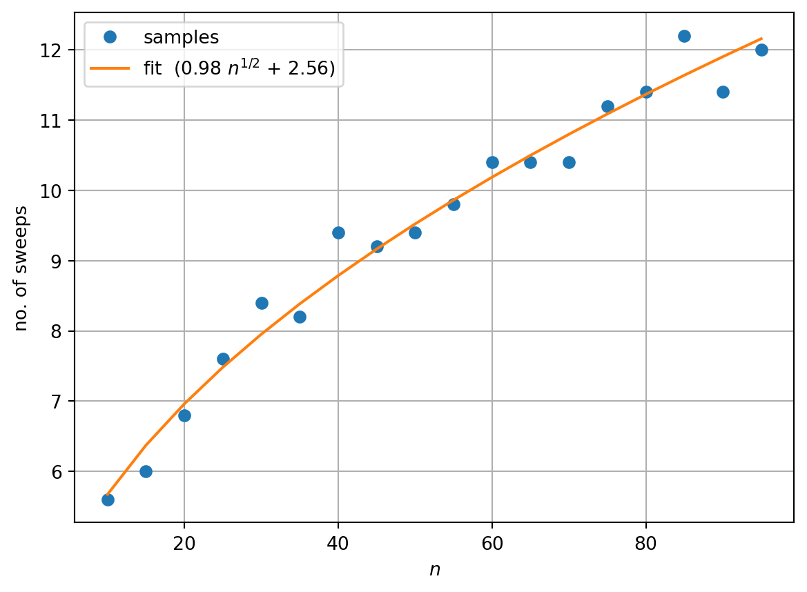

def jacobi_rotation(A, p, q):
"""
Computes one iteration of P_{pq}^T A P_{pq}.
Inputs: symmetric matrix A, indices p, q
Output: symmetric matrix A' with A'_{p, q} = 0 (and A'_{q, p} = 0).
"""
# copy matrix to new holder
A_new = A.copy()
# solve quadratic equation
b = (A[q, q] - A[p, p]) / A[p, q]
roots = (-b + np.sqrt(b * b + 4)) / 2, (-b - np.sqrt(b * b + 4)) / 2
t = min(roots, key=abs) # take smallest in absolute value root
# determine c, s
c = 1.0 / np.sqrt(t * t + 1.0)
s = c * t
# do updates
A_new[:, p] = c * A[:, p] - s * A[:, q]
A_new[:, q] = c * A[:, q] + s * A[:, p]
A_new[p, :] = c * A[p, :] - s * A[q, :]
A_new[q, :] = c * A[q, :] + s * A[p, :]
A_new[p, p] = c**2 * A[p, p] + s**2 * A[q, q] - 2 * c * s * A[p, q]
A_new[q, q] = s**2 * A[p, p] + c**2 * A[q, q] + 2 * c * s * A[p, q]
A_new[p, q] = 0.0 # replace update formula with exact value
A_new[q, p] = 0.0 # replace update formula with exact value
return A_new9 Eigenvectors and eigenvalues: practical solutions
In the previous lecture, we defined the eigenvalue problem for a matrix \(A\): Finding numbers \(\lambda\) (eigenvalues) and vectors \(\vec{x}\) (eigenvectors) which satisfy the equation: \[\begin{equation} A \vec{x} = \lambda \vec{x}. \end{equation}\] We saw one starting point for finding eigenvalues is to find the roots of the characteristic equation: a polynomial of degree \(n\) for an \(n \times n\) matrix \(A\). But we already have seen that this approach will be infeasible for large matrices. Instead, we will find a sequence of similar matrices to \(A\) such that we can read off the eigenvalues from the final matrix.
In equations, we can say our “grand strategy” is to find a sequence of matrices \(P_1, P_2, \ldots\) to form a sequence of matrices: \[\begin{equation} \label{eq:similarity_transform} A, P_1^{-1} A P, P_2^{-1} P_1^{-1} A P_1 P_2, P_3^{-1} P_2^{-1} P_1^{-1} A P_1 P_2 P_3, \ldots \end{equation}\] If we get all the way to a diagonal matrix, at level \(m\) say, then the eigenvalues are the diagonal of the matrix \[\begin{equation*} P_m^{-1} P_{m-1}^{-1} \cdots P_2^{-1} P_1^{-1} A P_1 P_2 \cdots P_{m-1} P_m, \end{equation*}\] and the eigenvectors are the columns of the matrix \[\begin{equation*} S_m = P_1 P_2 \cdots P_{m-1} P_m. \end{equation*}\] Sometimes, we only want to compute eigenvalues, and not eigenvectors, then it is sufficient to transform the matrix to be triangular (either upper or lower triangular). Then, we can read off that the eigenvalues are the diagonal entries (see ?exm-eigenvalue-triangular).
9.1 Jacobi transformations of a symmetric matrix
The Jacobi method forms a sequence of similarity transforms similar to \(\eqref{eq:similarity_transform}\). It is a foolproof approach for real, symmetric matrices (@sim-symmetric-nice).
The key idea is to use the matrix \(P_{pq}\) which is the matrix of the form \[\begin{equation} \label{eq:Pmatrix} P_{pq} = \begin{pmatrix} 1 &&&&&&& \\ & \ddots &&&&&& \\ && c & \cdots & s &&& \\ && \vdots & 1 & \vdots &&& \\ && -s & \cdots & c &&& \\ &&&&&& \ddots & \\ &&&&&&& 1 \end{pmatrix} \end{equation}\] That is a matrix where all diagonal elements are one except for the two elements \(c\) is rows \(p\) and \(q\). All off-diagonal elements are zero except the two elements \(s\) and \(-s\) in positions \((p, q)\) and \((q, p)\). We will choose \(c, s\) to be the cosine and sine of a particular angle (so that \(c^2 + s^2 = 1\)) which we specify later. Handily this means that \(P_{pq}^{-1} = P_{pq}^T\).
We will apply the matrix \(P_{pq}\) as a similarity transformation: \[\begin{equation*} A' = P_{pq}^{T} A P. \end{equation*}\]
Example 9.1 Let \(A\) be the \(3 \times 3\) matrix given by \[\begin{equation*} A = \begin{pmatrix} 1 & 2 & \frac{3 \sqrt{2 - \sqrt{2}}}{4}\\2 & 5 & \frac{3 \sqrt{\sqrt{2} + 2}}{4} \\\frac{3 \sqrt{2 - \sqrt{2}}}{4} & \frac{3 \sqrt{\sqrt{2} + 2}}{4} & 2 \sqrt{2} \end{pmatrix}. \end{equation*}\]
Let’s apply the matrix as a similarity transform with \(p=1, q=2\). Then we have \[\begin{equation*} P_{1,2} = \begin{pmatrix} c & s & 0\\- s & c & 0\\0 & 0 & 1 \end{pmatrix}, \end{equation*}\] where \(c = \cos(\theta)\) and \(s = \sin(\theta)\) and \(\theta\) is still to be determined.
We can compute that \[\begin{equation*} A P_{1,2} = \begin{pmatrix} c - 2 s & 2 c + s & \frac{3 \sqrt{2 - \sqrt{2}}}{4}\\ 2 c - 5 s & 5 c + 2 s & \frac{3 \sqrt{\sqrt{2} + 2}}{4}\\ \frac{3 c \sqrt{2 - \sqrt{2}}}{4} - \frac{3 s \sqrt{\sqrt{2} + 2}}{4} & \frac{3 c \sqrt{\sqrt{2} + 2}}{4} + \frac{3 s \sqrt{2 - \sqrt{2}}}{4} & 2 \sqrt{2} \end{pmatrix} \end{equation*}\] and \[\begin{equation*} A' = P_{1, 2}^T A P_{1,2} = \begin{pmatrix} c^{2} - 4 c s + 5 s^{2} & 2 c^{2} - 4 c s - 2 s^{2} & \frac{3 c \sqrt{2 - \sqrt{2}}}{4} - \frac{3 s \sqrt{\sqrt{2} + 2}}{4}\\ 2 c^{2} - 4 c s - 2 s^{2} & 5 c^{2} + 4 c s + s^{2} & \frac{3 c \sqrt{\sqrt{2} + 2}}{4} + \frac{3 s \sqrt{2 - \sqrt{2}}}{4}\\ \frac{3 c \sqrt{2 - \sqrt{2}}}{4} - \frac{3 s \sqrt{\sqrt{2} + 2}}{4} & \frac{3 c \sqrt{\sqrt{2} + 2}}{4} + \frac{3 s \sqrt{2 - \sqrt{2}}}{4} & 2 \sqrt{2} \end{pmatrix} \end{equation*}\] Our grant aim is to nudge \(A\) towards being diagonal. Since, we’ve started with the \((1, 2)\) entry we might hope that we can make \(A'_{1,2}\) to be zero. To do this we need \(\theta\) such that \[\begin{equation*} 2 \cos^{2}\theta - 4 \cos\theta \sin\theta - 2 \sin^2 \theta = 0 \end{equation*}\] We can see that if \(\theta = \pi/2 + m \pi\) (for some \(m \in \mathbb{Z}\)), \(\cos\theta = 0\) but \(\sin\theta = \pm 1\) and we don’t have a solution. Otherwise, \(\cos\theta \neq 0\) so we can divide by \(- 2 \cos^2\theta\) to get \[\begin{equation*} \tan^2\theta + 2 \tan(\theta) - 1 = 0. \end{equation*}\] This is a quadratic equation in \(\tan\theta\) with roots: \[\begin{equation*} \tan\theta = -1 \pm \sqrt{2}. \end{equation*}\] Taking the smaller root (with \(+\) sign), we get (using some trigonometric identities): \[\begin{equation} \label{eq:trig_id} \begin{aligned} \tan\theta & = -1 + \sqrt{2} \\ \cos\theta & = 1 / \sqrt{\tan^2\theta +1} = \sqrt{\sqrt{2}/4 + 1/2} \\ \sin\theta & = \tan\theta \cos\theta = \sqrt{1/2 - \sqrt{2}/4}. \end{aligned} \end{equation}\]
Applying these substitutions, we arrive at \[\begin{equation*} A' = \begin{pmatrix} 3 - 2 \sqrt{2} & 0 & 0\\0 & 2 \sqrt{2} + 3 & \frac{3}{2}\\0 & \frac{3}{2} & 2 \sqrt{2} \end{pmatrix} \end{equation*}\]
Exercise 9.1 Continue this exercise with \(P_{2, 3}\). Show that \(\theta\) can be chosen so that \[\begin{align*} A'' = P_{2, 3}^{-1} A' P_{2, 3} = \begin{pmatrix} 3 - 2 \sqrt{2} & 0 & 0\\0 & \frac{3}{2} + \frac{7 \sqrt{2}}{2} & 0\\0 & 0 & \frac{\sqrt{2}}{2} + \frac{3}{2} \end{pmatrix} \\ \approx \begin{pmatrix} 0.17157287525381 & 0 & 0\\0 & 6.44974746830583 & 0\\0 & 0 & 2.20710678118655 \end{pmatrix}. \end{align*}\]
The general case follows in a similar way. Multiplying out \(A' = P_{pq}^{T} A P_{pq}\) for a general \(n \times n\) matrix gives us the update formulae: \[\begin{align*} A'*{r, p} & = c A*{r, p} - s A_{r, q} && \text{for} \quad r \in \{1, \ldots n\} \setminus \{p, q\} \\ A'*{r, q} & = c A*{r, q} + s A_{r, p} && \text{for} \quad r \in \{1, \ldots n\} \setminus \{p, q\} \\ A'*{q, r} & = c A*{p, r} - s A_{q, r} && \text{for} \quad r \in \{1, \ldots n\} \setminus \{p, q\} \\ A'*{q, r} & = c A*{q, r} + s A_{p, r} && \text{for} \quad r \in \{1, \ldots n\} \setminus \{p, q\} \\ A'*{p, p} & = c^2 A*{p, p} + s^2 A_{q, q} - 2 c s A_{p, q} \\ A'*{q, q} & = s^2 A*{p, p} + c^2 A_{q, q} + 2 c s A_{p, q} \\ A'*{p, q} & = (c^2 - s^2) A*{p, q} + c s (A_{p, p} - A_{q, q}) \\ A'*{q, p} & = (c^2 - s^2) A*{q, p} + c s (A_{p, p} - A_{q, q}) \\ \end{align*}\] The equation we need to solve is to find \(\theta\) such that \[\begin{equation*} A'*{p, q} = (\cos^2\theta - \sin^2\theta) A*{p, q} + \cos\theta \sin\theta (A_{p, p} - A_{q, q}) = 0 \end{equation*}\] As in the example, we see that \(\pi/2 + m \pi\) is not a solution, so we are safe to assume that \(\cos\theta \neq 0\). Further, since we want to set \(A'_{p, q}\) to zero, we can assume that \(A_{p, q} \neq 0\) (otherwise we don’t need to address this pair of \(p\) and \(q\)). So we will divide by \(-\cos^2\theta A_{p, q}\) to get a quadratic equation in \(\tan\theta\): \[\begin{equation*} -1 + \tan^2\theta - \tan\theta \frac{A_{p, p} - A_{q, q}}{A_{p, q}} = 0 \end{equation*}\] We follow the example above and take the smallest root using the quadratic formula and apply the same trigonometric identities in order to compute \(c\) and \(s\) \(\eqref{eq:trig_id}\).
The only remaining step is to decide which order to cover \(p\) and \(q\). The update formula only needs to be applied to the upper triangular part of the matrix away from the diagonal. In Jacobi’s original algorithm from 1846, he proposed to eliminate each of the largest possible values in turn. This turns out to be computationally expensive and not necessary. Instead we simply iterate through all possible nonzero values until we have eliminated all off-diagonal values.
9.2 Python code
Let’s try it out!
A = np.array(
[
[1, 2, 3 * np.sqrt(2 - np.sqrt(2)) / 4],
[2, 5, 3 * np.sqrt(2 + np.sqrt(2)) / 4],
[
3 * np.sqrt(2 - np.sqrt(2)) / 4,
3 * np.sqrt(2 + np.sqrt(2)) / 4,
2 * np.sqrt(2),
],
]
)
np_ev, _ = np.linalg.eig(A)
print("initial matrix")
print(A)
A = jacobi_rotation(A, 0, 1)
print("after one rotation (0, 1)")
print(A)
A = jacobi_rotation(A, 1, 2)
print("after second rotation (1, 2)")
print(A)
print("Our estimate of the eigenvalues is")
print(np.diag(A))
print("Numpy's estimate of the eigenvalues is")
print(np_ev)initial matrix
[[1. 2. 0.57402515]
[2. 5. 1.3858193 ]
[0.57402515 1.3858193 2.82842712]]
after one rotation (0, 1)
[[ 1.71572875e-01 0.00000000e+00 -1.11022302e-16]
[ 0.00000000e+00 5.82842712e+00 1.50000000e+00]
[-1.11022302e-16 1.50000000e+00 2.82842712e+00]]
after second rotation (1, 2)
[[ 1.71572875e-01 -4.24863958e-17 -1.02571233e-16]
[-4.24863958e-17 6.44974747e+00 0.00000000e+00]
[-1.02571233e-16 0.00000000e+00 2.20710678e+00]]
Our estimate of the eigenvalues is
[0.17157288 6.44974747 2.20710678]
Numpy's estimate of the eigenvalues is
[6.44974747 0.17157288 2.20710678]Let’s try again with a harder problem
n = 10
tol = 1.0e-12
# generate a random matrix
np.random.seed(42)
S = special_ortho_group.rvs(n)
D = np.diag(np.random.randint(-5, 5, (n,)))
A = S.T @ D @ S
print("initial matrix A")
print(A)
np_ev, _ = np.linalg.eig(A)
# sweep over matrix several times
for sweep in range(10):
for i in range(n):
for j in range(i + 1, n):
if abs(A[i, j]) < tol:
continue
A = jacobi_rotation(A, i, j)
non_diag_nonzeros = 0
non_diag_zeros = 0
for i in range(n):
for j in range(n):
if i == j:
continue
if abs(A[i, j]) < tol:
non_diag_zeros += 1
else:
non_diag_nonzeros += 1
print(f"end of sweep {sweep}: {non_diag_zeros=} {non_diag_nonzeros=}")
if non_diag_nonzeros == 0:
break
print("our estimate of the eigenvalues is")
print(np.diag(A))
print("Numpy's estimate of the eigenvalues is")
print(np_ev)initial matrix A
[[-1.37563753 -0.31873229 -2.41518457 0.00758962 0.43535083 -1.10245202
-0.23161883 1.40936996 -1.3653408 0.27180199]
[-0.31873229 -2.28404485 0.78760996 0.22552486 0.14405941 -0.97513954
0.82696754 0.08329181 -0.50516593 0.02240545]
[-2.41518457 0.78760996 -1.14147565 -0.04089376 -0.47524592 -1.04600716
1.1715812 -0.2484816 -0.01347433 0.16842364]
[ 0.00758962 0.22552486 -0.04089376 -1.12774273 -0.11050405 0.67975844
0.89070664 -0.16419119 0.76955074 -1.12101653]
[ 0.43535083 0.14405941 -0.47524592 -0.11050405 -0.34284795 0.38517199
2.23177433 0.10268787 -1.56549187 -1.4975995 ]
[-1.10245202 -0.97513954 -1.04600716 0.67975844 0.38517199 -0.23096058
1.06186893 0.88399021 -0.0521502 0.82406591]
[-0.23161883 0.82696754 1.1715812 0.89070664 2.23177433 1.06186893
-1.04669082 0.84140141 -2.19527708 1.56669622]
[ 1.40936996 0.08329181 -0.2484816 -0.16419119 0.10268787 0.88399021
0.84140141 -2.13636108 -0.67823179 1.45259087]
[-1.3653408 -0.50516593 -0.01347433 0.76955074 -1.56549187 -0.0521502
-2.19527708 -0.67823179 -1.26671335 -0.35833241]
[ 0.27180199 0.02240545 0.16842364 -1.12101653 -1.4975995 0.82406591
1.56669622 1.45259087 -0.35833241 -0.04752548]]
end of sweep 0: non_diag_zeros=2 non_diag_nonzeros=88
end of sweep 1: non_diag_zeros=2 non_diag_nonzeros=88
end of sweep 2: non_diag_zeros=2 non_diag_nonzeros=88
end of sweep 3: non_diag_zeros=32 non_diag_nonzeros=58
end of sweep 4: non_diag_zeros=86 non_diag_nonzeros=4
end of sweep 5: non_diag_zeros=90 non_diag_nonzeros=0
our estimate of the eigenvalues is
[-5. -3. 4. 2. -1. 1. 2. -5. -3. -3.]
Numpy's estimate of the eigenvalues is
[ 4. -1. 1. 2. 2. -3. -5. -5. -3. -3.]We see that it takes 10 sweeps to find all the eigenvalues!
9.3 Computing eigenvectors
After enough sweeps, we end up with a diagonal matrix (at least to machine precision), let’s call it \(D\). But indeed, we have computed a factorisation: \[\begin{equation*} D = V^T A V, \end{equation*}\] where \(V = P_1 P_2 \cdots\) and each \(P_j\) is a Jacobi rotation matrix. We can immediately identify the matrix \(V\) as having columns which correspond to the eigenvectors of \(A\).
The eigenvector matrix can be computed by successively computing: \[\begin{equation*} V' = V P_{pq}, \end{equation*}\] starting from \(V\) is the identity matrix. We can see that componentwise, we have the update formulae: \[\begin{align*} v'*{rs} &= v*{rs} && s \neq p, s \neq q \\ v'*{rp} &= c v*{rp} - s v_{rq} && ?? \\ v'*{rq} &= s v*{rp} + c v_{rq} && ??. \end{align*}\]
Example 9.2 Continuing Example 9.1. We computed that in the first iteration \[\begin{align*} \cos\theta & = 1 / \sqrt{\tan^2\theta +1} = \sqrt{\sqrt{2}/4 + 1/2} \\ \sin\theta & = \tan\theta \cos\theta = \sqrt{1/2 - \sqrt{2}/4}. \end{align*}\]
Starting from \[ V = \begin{pmatrix} 1 & 0 & 0 \\ 0 & 1 & 0 \\ 0 & 0 & 1 \\ \end{pmatrix}, \] we can compute \(V'\) as \[ V' = \begin{pmatrix} c & s & 0 \\ -s & c & 0 \\ 0 & 0 & 1 \\ \end{pmatrix} = \begin{pmatrix} \sqrt{\sqrt{2}/4 + 1/2} & \sqrt{1/2 - \sqrt{2}/4} & 0 \\ -\sqrt{1/2 - \sqrt{2}/4} & \sqrt{\sqrt{2}/4 + 1/2} & 0 \\ 0 & 0 & 1 \\ \end{pmatrix}. \]
Exercise 9.2 Continue this exercise with \(P_{2, 3}\) to show \[\begin{align*} & V'' = V' P_{2, 3} = \begin{pmatrix} \frac{\sqrt{\sqrt{2} + 2}}{2} & - \frac{\sqrt{2}}{4} & \frac{1}{2} - \frac{\sqrt{2}}{4} \\ - \frac{\sqrt{2 - \sqrt{2}}}{2} & -\frac{1}{2} - \frac{\sqrt{2}}{4} & \frac{\sqrt{2}}{4} \\ 0 & - \frac{\sqrt{2 - \sqrt{2}}}{2} & - \frac{\sqrt{\sqrt{2} + 2}}{2} \end{pmatrix} \\ & \approx \begin{pmatrix} 0.923879532511287 & -0.353553390593274 & 0.146446609406726\\ -0.38268343236509 & -0.853553390593274 & 0.353553390593274\\ 0 & -0.38268343236509 & -0.923879532511287\end{pmatrix}. \end{align*}\]
9.4 Python code (again)
We can try our methods on
def jacobi_rotation_with_V(A, V, p, q):
"""
Computes one iteration of P_{pq}^T A P_{pq} and V P_{pq}
Inputs: symmetric matrix A, matrix V, indices p, q
Output: symmetric matrix A' with A'_{p, q} = 0 (and A'_{q, p} = 0),
updated corresponding eigenvector matrix V
"""
# copy matrix to new holder
A_new = A.copy()
V_new = V.copy()
# solve quadratic equation
b = (A[q, q] - A[p, p]) / A[p, q]
roots = (-b + np.sqrt(b * b + 4)) / 2, (-b - np.sqrt(b * b + 4)) / 2
t = min(roots, key=abs) # take smallest in absolute value root
# determine c, s
c = 1.0 / np.sqrt(t * t + 1.0)
s = c * t
# do updates
A_new[:, p] = c * A[:, p] - s * A[:, q]
A_new[:, q] = c * A[:, q] + s * A[:, p]
A_new[p, :] = c * A[p, :] - s * A[q, :]
A_new[q, :] = c * A[q, :] + s * A[p, :]
A_new[p, p] = c**2 * A[p, p] + s**2 * A[q, q] - 2 * c * s * A[p, q]
A_new[q, q] = s**2 * A[p, p] + c**2 * A[q, q] + 2 * c * s * A[p, q]
A_new[p, q] = 0.0 # replace update formula with exact value
A_new[q, p] = 0.0 # replace update formula with exact value
V_new[:, p] = c * V[:, p] - s * V[:, q]
V_new[:, q] = s * V[:, p] + c * V[:, q]
return A_new, V_newLet’s try it out!
A = np.array(
[
[1, 2, 3 * np.sqrt(2 - np.sqrt(2)) / 4],
[2, 5, 3 * np.sqrt(2 + np.sqrt(2)) / 4],
[
3 * np.sqrt(2 - np.sqrt(2)) / 4,
3 * np.sqrt(2 + np.sqrt(2)) / 4,
2 * np.sqrt(2),
],
]
)
np_eval, np_evec = np.linalg.eig(A)
V = np.eye(A.shape[0])
print("initial matrices")
print(A)
print(V)
A, V = jacobi_rotation_with_V(A, V, 0, 1)
print("after one rotation (0, 1)")
print(A)
print(V)
A, V = jacobi_rotation_with_V(A, V, 1, 2)
print("after second rotation (1, 2)")
print(A)
print(V)
print("Our estimate of the eigenvalues is")
print(np.diag(A))
print("Numpy's estimate of the eigenvalues is")
print(np_eval)
print("Our estimate of eigenvectors is")
print(V)
print("Numpy's estimate of the eigenvalues is")
print(np_evec)initial matrices
[[1. 2. 0.57402515]
[2. 5. 1.3858193 ]
[0.57402515 1.3858193 2.82842712]]
[[1. 0. 0.]
[0. 1. 0.]
[0. 0. 1.]]
after one rotation (0, 1)
[[ 1.71572875e-01 0.00000000e+00 -1.11022302e-16]
[ 0.00000000e+00 5.82842712e+00 1.50000000e+00]
[-1.11022302e-16 1.50000000e+00 2.82842712e+00]]
[[ 0.92387953 0.38268343 0. ]
[-0.38268343 0.92387953 0. ]
[ 0. 0. 1. ]]
after second rotation (1, 2)
[[ 1.71572875e-01 -4.24863958e-17 -1.02571233e-16]
[-4.24863958e-17 6.44974747e+00 0.00000000e+00]
[-1.02571233e-16 0.00000000e+00 2.20710678e+00]]
[[ 0.92387953 0.35355339 -0.14644661]
[-0.38268343 0.85355339 -0.35355339]
[ 0. 0.38268343 0.92387953]]
Our estimate of the eigenvalues is
[0.17157288 6.44974747 2.20710678]
Numpy's estimate of the eigenvalues is
[6.44974747 0.17157288 2.20710678]
Our estimate of eigenvectors is
[[ 0.92387953 0.35355339 -0.14644661]
[-0.38268343 0.85355339 -0.35355339]
[ 0. 0.38268343 0.92387953]]
Numpy's estimate of the eigenvalues is
[[ 3.53553391e-01 9.23879533e-01 -1.46446609e-01]
[ 8.53553391e-01 -3.82683432e-01 -3.53553391e-01]
[ 3.82683432e-01 -1.29480716e-16 9.23879533e-01]]Success! We have the same values (up to reordering).
We can also apply the same code to the larger problem size:
n = 10
tol = 1.0e-12
# generate a random matrix
np.random.seed(42)
S = special_ortho_group.rvs(n)
D = np.diag(np.random.randint(-5, 5, (n,)))
A = S.T @ D @ S
V = np.eye(n)
print("initial matrix A")
print(A)
np_eval, np_evec = np.linalg.eig(A)
# sweep over matrix several times
for sweep in range(10):
for i in range(n):
for j in range(i + 1, n):
if abs(A[i, j]) < tol:
continue
A, V = jacobi_rotation_with_V(A, V, i, j)
non_diag_nonzeros = 0
non_diag_zeros = 0
for i in range(n):
for j in range(n):
if i == j:
continue
if abs(A[i, j]) < tol:
non_diag_zeros += 1
else:
non_diag_nonzeros += 1
print(f"end of sweep {sweep}: {non_diag_zeros=} {non_diag_nonzeros=}")
if non_diag_nonzeros == 0:
break
print("our estimate of the eigenvalues is")
print(np.diag(A))
print("Numpy's estimate of the eigenvalues is")
print(np_ev)
print("Our estimate of eigenvectors is")
print(V)
print("Numpy's estimate of the eigenvalues is")
print(np_evec)initial matrix A
[[-1.37563753 -0.31873229 -2.41518457 0.00758962 0.43535083 -1.10245202
-0.23161883 1.40936996 -1.3653408 0.27180199]
[-0.31873229 -2.28404485 0.78760996 0.22552486 0.14405941 -0.97513954
0.82696754 0.08329181 -0.50516593 0.02240545]
[-2.41518457 0.78760996 -1.14147565 -0.04089376 -0.47524592 -1.04600716
1.1715812 -0.2484816 -0.01347433 0.16842364]
[ 0.00758962 0.22552486 -0.04089376 -1.12774273 -0.11050405 0.67975844
0.89070664 -0.16419119 0.76955074 -1.12101653]
[ 0.43535083 0.14405941 -0.47524592 -0.11050405 -0.34284795 0.38517199
2.23177433 0.10268787 -1.56549187 -1.4975995 ]
[-1.10245202 -0.97513954 -1.04600716 0.67975844 0.38517199 -0.23096058
1.06186893 0.88399021 -0.0521502 0.82406591]
[-0.23161883 0.82696754 1.1715812 0.89070664 2.23177433 1.06186893
-1.04669082 0.84140141 -2.19527708 1.56669622]
[ 1.40936996 0.08329181 -0.2484816 -0.16419119 0.10268787 0.88399021
0.84140141 -2.13636108 -0.67823179 1.45259087]
[-1.3653408 -0.50516593 -0.01347433 0.76955074 -1.56549187 -0.0521502
-2.19527708 -0.67823179 -1.26671335 -0.35833241]
[ 0.27180199 0.02240545 0.16842364 -1.12101653 -1.4975995 0.82406591
1.56669622 1.45259087 -0.35833241 -0.04752548]]
end of sweep 0: non_diag_zeros=2 non_diag_nonzeros=88
end of sweep 1: non_diag_zeros=2 non_diag_nonzeros=88
end of sweep 2: non_diag_zeros=2 non_diag_nonzeros=88
end of sweep 3: non_diag_zeros=32 non_diag_nonzeros=58
end of sweep 4: non_diag_zeros=86 non_diag_nonzeros=4
end of sweep 5: non_diag_zeros=90 non_diag_nonzeros=0
our estimate of the eigenvalues is
[-5. -3. 4. 2. -1. 1. 2. -5. -3. -3.]
Numpy's estimate of the eigenvalues is
[ 4. -1. 1. 2. 2. -3. -5. -5. -3. -3.]
Our estimate of eigenvectors is
[[ 0.51065887 -0.13311275 -0.1812081 0.5718129 -0.29621508 -0.20941776
-0.23530216 -0.41625872 0.02955701 -0.02430908]
[ 0.1497469 0.87119484 -0.07721252 -0.14817269 -0.28909286 -0.26702604
0.1782095 -0.03048643 -0.0500966 0.02456002]
[ 0.50218548 -0.30099823 0.03452595 -0.58755958 -0.0111315 -0.25729642
0.27574933 -0.09168642 0.28718522 -0.27847208]
[ 0.07251175 -0.19247681 0.01407957 -0.02314526 -0.78840645 0.40107491
0.21255971 0.34191734 -0.10342981 0.04157102]
[ 0.2443881 0.00724485 -0.42805002 0.25000527 0.29490886 0.09601399
0.47834543 0.29443737 0.30067141 0.43862465]
[ 0.33692503 0.23683116 -0.24302346 -0.14936503 0.21841216 0.74304572
-0.20930051 -0.16094255 -0.06055934 -0.27536297]
[-0.39183136 -0.14634552 -0.57554344 -0.27072551 -0.16659865 0.01740098
0.17339726 -0.56209203 -0.11008122 0.18525331]
[-0.30014371 0.08493063 -0.28336596 0.04075787 -0.1878171 -0.02018258
-0.30314006 0.17061334 0.75561098 -0.30513883]
[ 0.03562626 0.07984189 0.4809706 -0.12346684 -0.09029208 0.25648376
-0.09136763 -0.37477023 0.45243229 0.56422242]
[ 0.2030366 -0.06713312 -0.27321259 -0.36097477 -0.03339419 -0.17305804
-0.62347841 0.31996943 -0.14701055 0.45336437]]
Numpy's estimate of the eigenvalues is
[[ 0.1812081 -0.29621508 0.20941776 -0.61833413 -0.26211936 0.1385047
-0.65882001 0.01543299 0.01838825 0.00742843]
[ 0.07721252 -0.28909286 0.26702604 0.20484093 -0.01135791 -0.85228066
-0.1353326 0.07413412 0.03067527 -0.15588922]
[-0.03452595 -0.0111315 0.25729642 0.64828794 0.24636739 0.39944087
-0.44717942 0.25663368 0.27479557 -0.16424828]
[-0.01407957 -0.78840645 -0.40107491 0.10229181 -0.12669188 0.15561557
0.15982712 0.30700944 -0.12353739 0.0616354 ]
[ 0.42805002 0.29490886 -0.09601399 -0.0491652 -0.50765179 -0.0197827
-0.0033952 0.38260671 0.27134089 0.47083702]
[ 0.24302346 0.21841216 -0.74304572 0.05847969 0.25157218 -0.1922056
-0.36284189 0.0966046 -0.02025481 -0.3226918 ]
[ 0.57554344 -0.16659865 -0.01740098 0.31634205 0.08217816 0.08464294
-0.05143066 -0.68186036 -0.13499389 0.1904727 ]
[ 0.28336596 -0.1878171 0.02018259 -0.15304895 0.17497158 0.13317883
0.34044251 -0.06535305 0.77821578 -0.19134954]
[-0.4809706 -0.09029208 -0.25648377 0.07940841 0.15274206 -0.07921144
-0.26440339 -0.26171187 0.42091564 0.60223992]
[ 0.27321258 -0.03339419 0.17305804 0.09655655 0.68754591 -0.04642289
0.0447886 0.37514302 -0.18137684 0.42832468]]9.5 Computational cost
A quick look at the cost of each rotation shows that the main cost is in updating all the entries. For a matrix of size \(n\), we must update \(4n-4\) entries (two rows and two columns) in \(A\) and \(2n\) entries in (two rows) in \(V\). We say that each rotation costs \(O(n)\).
One sweep corresponds to trying to eliminate all off diagonal entries (i.e. the strictly upper triangular portion of the matrix). So each sweep corresponds to \(n (n-1)/2\) rotations or \((6n - 4) n (n-1) / 2\). So each sweep is \(O(n^3)\).
The remaining question is how many sweeps are required? Let’s test this using our code.

This gives us an estimate that the number of sweeps is \(O(n^{1/2})\). So we would expect the time to run the algorithm to scale like \(n^{7/2}\). However, in practical situations, we see that the growth is closer to \(n^{5/2}\):

9.6 References
Numerical recipes, chapter XX?